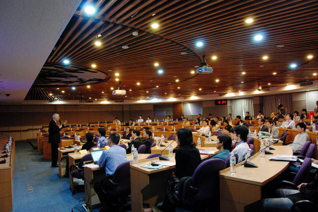

2007 國際企業運算研討會 (ICESA 2007)

2007 國際企業運算研討會已經圓滿落幕，感謝各界先進的踴躍參加與支持！
 ◎ 活動時間：2007/12/12-13
◎ 活動地點：中央研究院 學術活動中心 二樓
◎ 下載: 投影片 / 影片
中研院資訊所自由軟體鑄造場擬於 12/12、12/13 在院內學術活動中心舉辦 2007 國際企業運算研討會 (2007 International Conference on Enterprise Systems and Applications；ICESA 2007)。兩天的研討會中，包含企業運算原理與實務的論文發表及海報展示，此外，主辦單位特別邀請了國立清華大學榮譽講座教授劉炯朗院士及資策會黃彥男副執行長擔綱主題演講者，分別從學術及產業的角度，親身闡述企業應用軟體的未來趨勢。另外自由軟體鑄造場亦安排國際大廠 IBM 及國內 JAVA 工具軟體領導廠商普奇科技分別進行兩場寶貴的技術教學交流。在面對面的座談會上，延攬了來自韓國、香港、新加坡等地的專家，跟與會來賓針對在地的經驗與亞洲區域軟體發展的機會與挑戰進行討論。
歡迎各界先進一同來共襄盛舉，機會難得，席次有限，11/30 前完成報名繳費者，還享有優惠價格喔！
您也許有興趣閱讀以下文章:
- 2007 國際企業運算研討會 (ICESA 2007) ，11/30 前報名享有優惠價格喔！ - 2007-10-26
- 2007 國際企業運算研討會 (ICESA 2007) 論文截稿延至 2007/8/1 - 2007-06-24
- 2007 國際企業運算研討會 (ICESA 2007) 論文徵求 - 2007-02-09